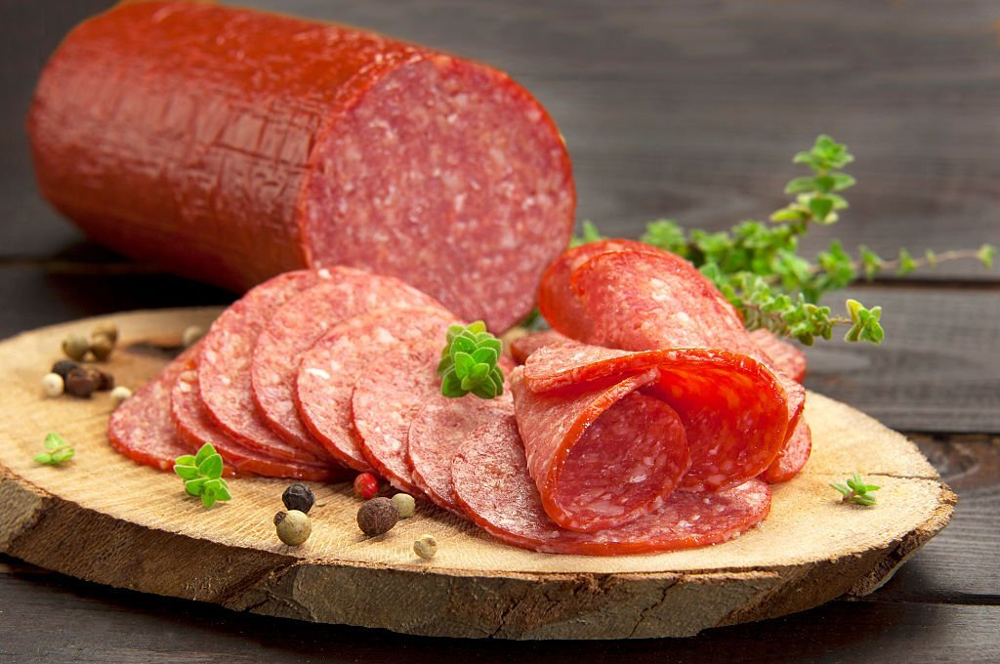
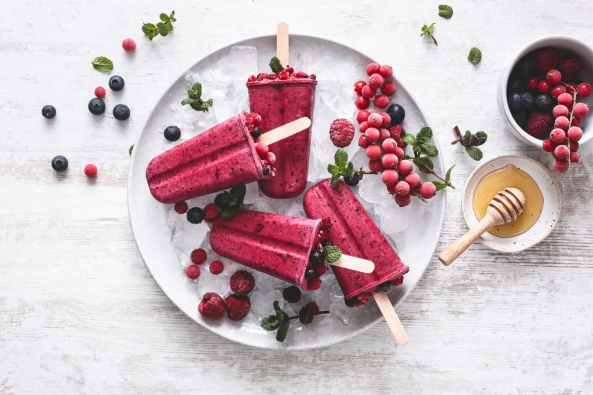

-
Зв'язує білки
Карагiнан має відмінну здатність зв'язувати харчові білки, тому застосовується в молочних і м'ясних продуктах як харчова добавка.
-
Альтернатива для веганів
У деяких сферах виробництва він використовується для заміни желатину, який має тваринне походження.
-
Унікальна структура
ікальна хімічна структура карагiнану не додає продукту поживної цінності чи смаку при використанні як харчова добавка.
Карагінан - його види та особливості
Карагінани - це сімейство гідроколоїдів, що дозволяють загущати, стабілізувати та утворювати гелі. Отримуют з червоних водоростей, тому це 100% натуральний продукт. Особливо активно вони взаємодіють з білками, тому широко використовуються у молочних продуктах. Є три основні типи: йота карагінан, каппа карагінан і лямбда карагінан. Вони мають різні властивості та використовуються в різних промислових сферах.
| Каппа | Йота | Лямбда | |
|---|---|---|---|
| Сфера використання | В молочних продуктах, соках, напоях та кондитерських виробах | У м'ясних продуктах, соусах та заморожених десертах | В напоях, сухих сумішах та інших продуктах, де потрібна висока стабільність |
| Призначення | Стабілізація емульсій, пін, загущення, гелеутворення | Стабілізація емульсій, пін, загущення, водянистий гель | Стабілізація емульсій, пін, загущення |
| Температура повного розчинення | 70°С | 60°С | 20-25°С |
| Утворення гелів | Термооборотні крихкі, тверді гелі | Термооборотні м'які, еластичні гелі | Не утворює гелів, працює як загусник |
| Прозорість гелю | Прозорий | Прозорий | Прозорий |
| УЗаморожування/ відтавання | Нестабільний | Стабільний | Стабільний |
Де використовуют карагінан?
-

Сир на основі карагінану: новий рівень м'якості і консистенції
Карагінан додає текстуру та консистенцію сиру, поліпшує його структуру, забезпечує стабільність та покращує його смакові властивості. Каппа карагінан використовується в виробництві м'яких сирів, таких як крем-сир та сир з пліснявою. Йота карагінан застосовується в виробництві твердих сирів, таких як чеддер та гауда
-

В м'ясних виробах: забезпечення стабільної текстури та смаку
Карагінан використовують у виробництві різноманітних м'ясних продуктів, таких як ковбаси, шинки, м'ясні консерви, деликатеси і інші. Він допомагає забезпечити рівномірну консистенцію, запобігає відділенню води та жиру, а також дозволяє зменшити кількість води, необхідної для виробництва продукту, що збільшує його економічність.
-

Морозиву забезпечує: кремову консистенцію без кристалів льоду та підвищену стійкість до танення
Карагінан використовують при виробництві морозива як загущувач та стабілізатор, що дозволяє підвищити його якість та термін придатності. Карагінан допомагає зменшити кристалізацію води в морозиві, що покращує його текстуру та консистенцію.
-

Йогурт з карагінаном: стійка консистенція і підвищена здатність до зберігання
При додаванні фруктів до йогурту, може відбутися відділення води з фруктів, що може призвести до зниження якості йогурту. Однак додавання карагінану може допомогти утримувати воду та забезпечувати стабільність текстури йогурту з фруктами.
-

Молекулярна кухня з карагінаном: відкрийте нові можливості у гастрономії
Основна перевага використання карагінану в молекулярній кухні полягає в його здатності створювати різноманітні текстури: від гелеподібних до желе та піни. Дозволяє досягнути стійкості страви, що дає більше можливостей для творчості та покращення якості готових страв.
Співпраця
Ми розуміємо, що кожен з наших клієнтів має різні потреби щодо обсягів та типів упаковки, тому ми пропонуємо різноманітні варіанти упаковки для наших продуктів.
-
Для дому

-
Для ресторанів

-
Для виробництва

Наша команда професіоналів з досвідом виробництва та технології продовжує розробляти нові формули і вдосконалювати наявні, щоб забезпечити наших клієнтів найефективнішими рішеннями для їхнього виробництва. Якщо ви шукаєте надійного партнера для співпраці, який може надати індивідуальні рішення та забезпечити високу якість продукції, зв'яжіться з нами прямо зараз.

Створіть ідеальний продукт разом з нами
Залиште свій запит і ми допоможемо вам!
Вони вже спробували
Наші клієнти підкажуть

Я вегетаріанка, тому шукаю постійно альтернативи і нові продукти. За допомогою карагінану я приготувала просто бомбезний сир фета. Вийшов дуже соковитий і тримав форму. Рекомендую. Для мене карагінан відкриття року.